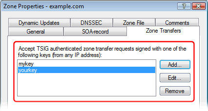
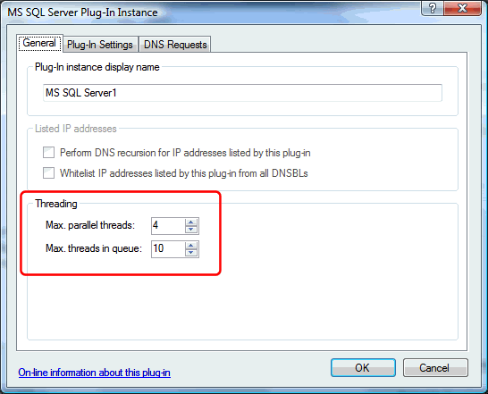
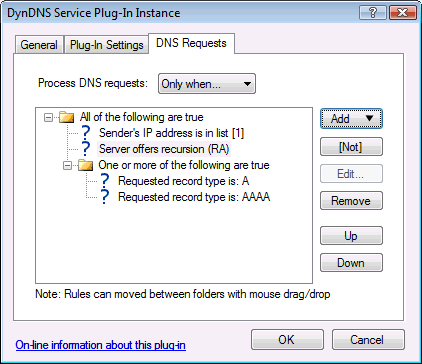
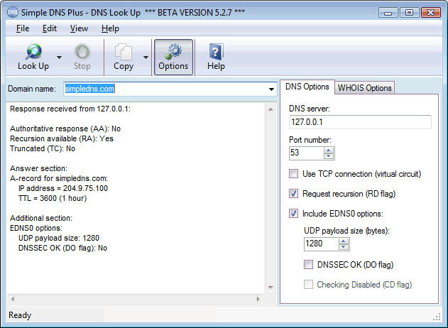

New features in v. 5.2:
Remote Management
Runs on Windows "Server Core"
DNSSEC
Secure Zone Transfers (TSIG signed)
Check Internet Delegations wizard
Windows Performance Counters
High performance, multi-threaded plug-in processing
DNS request "rules" for plug-ins
Enhanced DNS Look Up tool
New standard plug-ins
Miscellaneous updates / changes
New RFC and draft support
You can now use the normal Simple DNS Plus user interface on a remote computer.
For details see this news article.
You can now run Simple DNS Plus on Windows Server Core.
For details see this article.

Simple DNS Plus can now host DNSSEC signed zones and includes GUI tools for DNSSEC key management and zone signing. For details see this news article, this article, and this article [RETIRED].

Simple DNS Plus now supports secure zone transfer (TSIG authenticated).
Both zone transfer requests and responses are authenticated, so this provides protection in two ways; it prevents unauthorized transfers (only people / servers with the correct key can transfer), and it ensures data integrity on secondary servers (not possible to spoof / inject false data during transfers).
For details see this news article.

This new wizard lets you automatically test if the NS and SOA records in your local zone data match the actual current delegations on the Internet. This can be very useful both to check for errors and to make sure that you still own the domain names that you think you do. It could also be used for example by ISPs to see if any customers have left them (changed their DNS to another provider).

Simple DNS Plus now supplies 9 different performance counters which can be graphed with the Windows Performance Monitor and polled by other programs such as SNMP tools:

All plug-in processing is now performed asynchronously (in separate threads) so that other DNS requests that are not processed by the plug-in can proceed without delay.
We have also added the option for plug-ins to process multiple DNS requests in parallel. This can improve plug-in performance significantly - especially for resources on multi-core computers.

Multi threading is currently available in the MS SQL Server, MS SQL Server Plus, and the MySQL Server plug-ins, and is of course also available for implementation by 3rd party plug-in developers.
New "rule engine" and GUI editor for setting up "rules" controlling which DNS requests are processed by each plug-in. This is configured in new "DNS Requests" tab - which replaces the "DNS Ask About" and "DNS Access" tabs.
Plug-ins can provide custom "rules" for other plug-ins. For example; you can setup a rule that a plug-in may only be queried from IP addresses listed by another plug-in. Such rules may be based on databases or practically anything else you can think of.

More details are available in this article.
New options pane docked in main window for quick and easy access, separate DNS and WHOIS server fields, new server port fields, and new DNSSEC options / output:
